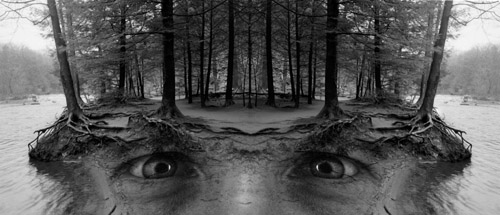

Peter Casolino
Untitled
 |
 |
Peter Casolino has worked as a photojournalist for the New Haven Register in Connecticut since 1991. He studied painting and photography at Southern Connecticut State University. His art relies on the camera eye and is entirely photo-based. It is often composite. It might be better termed heightened photography rather than manipulative. It often establishes a subtle and surreal mood. He has been the recipient of numerous awards including National Press Photographer, Photographer of the Year for the New England Region (1994), and served as the Editor and Publisher of "Photo of the Year 2001." Casolino has illustrated 14 educational children's books for Blackbirch Press, including the popular "Made in the USA" series and the series "I Want To Become A..." His editorial clients include: Life, Time, Newsweek, People, New York Times, Washington Post and Playboy. Seven of his photo manipulations are included here.